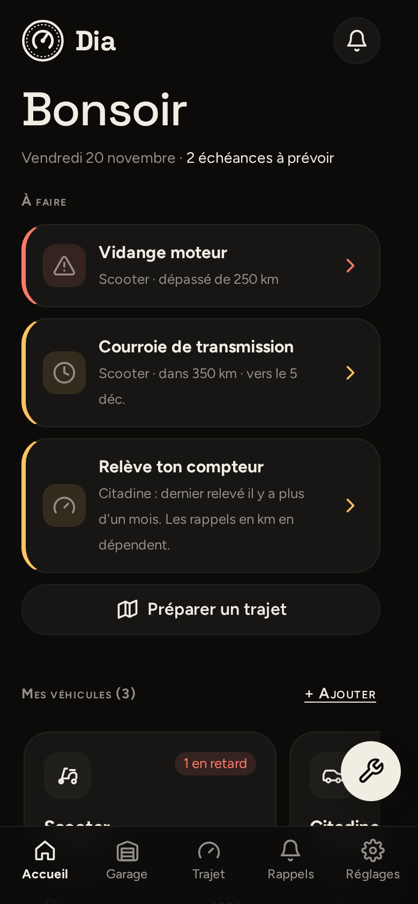
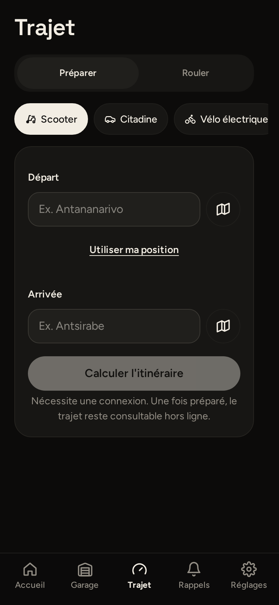
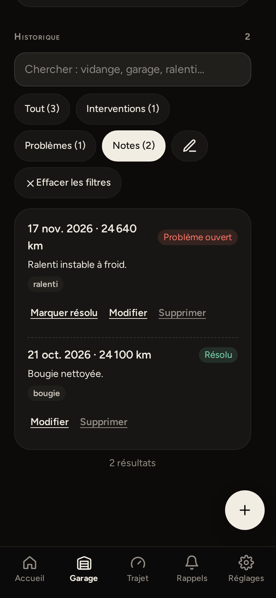

Fikojakojana sy fampahatsiahivana
Tantaran'ny asa natao miaraka amin'ny sarin'ny faktiora. Fampahatsiahivana « km na faharetana, izay tonga voalohany », na dia mikatona aza ny app.

Scooter, moto, fiara, kamiao na bisikileta: manaraka ny fikojakojana, ny solika ary ny dia i Dia. Tsy mila Internet, tsy mila kaonty, tsy misy dokam-barotra.

Natao ho an'i Madagasikara aloha i Dia, nefa mandeha na aiza na aiza.
Tantaran'ny asa natao miaraka amin'ny sarin'ny faktiora. Fampahatsiahivana « km na faharetana, izay tonga voalohany », na dia mikatona aza ny app.
Saha 2 amin'ny 3 ihany, fanjifana, vidiny isaky ny km, halaviran-dalana azo atao araka ny jauge-nao.

Hafainganana, halavirana ary lalana nodiavina, na dia any ambadika aza.

Lalana, toeram-pivarotana solika eny an-dalana, fampitandremana raha misy elanelana mihoatra ny solika ananao.

Olana, andrana, fanamboarana, firafitry ny fiara.

Tsy misy mivoaka ny findainao. Tsy misy mpizara, tsy misy fanaraha-maso. Azonao aondrana JSON na CSV rehefa tianao.
Fiainana manokanaKarazany, angovo, kaontera. Manolotra ny fampahatsiahivana mety i Dia.
Segondra vitsy eny amin'ny toeram-pivarotana solika na any amin'ny garazy.
Mampahatsiahy anao i Dia alohan'ny vidanzy, ny frein na ny courroie.
Pejy iray isaky ny filana.
Ao anaty app iray ihany ny zava-drehetra.


Scooter, fiara, bisikileta: samy manana ny kaonterany, ny fampahatsiahivany ary ny fandaniany.
Sary nalaina tamin'ny angona fanandramana.
Eny. Mandeha tsy misy Internet ny zava-drehetra, afa-tsy ny sarintany sy ny fanomanana dia, izay mila tambajotra rehefa mikaroka.
Eny: tsy misy dokam-barotra, tsy misy famandrihana, tsy misy dikan-teny andoavam-bola. Velona amin'ny fanomezan'izay maniry ny app.
Ao amin'ny findainao ihany. Tsy misy kaonty, tsy misy mpizara Dia. Aza adino ny manondrana fitehirizana (Fikirana) alohan'ny hanovana finday.
Android 7 na vaovao kokoa. Mbola tsy misy ho an'ny iPhone aloha.
Scooter, moto, fiara, fiara fitaterana entana, kamiao, bisikileta ary bisikileta elektrika, araka izay itiavanao.
Tsy misy dokam-barotra, tsy misy famandrihana, tsy misy angona amidy. Raha mahasoa anao ny app, fanomezana kely dia manampy amin'ny fikojakojana azy. MVola na karatra banky, ianao no mamaritra ny vola.
Maimaim-poana, tsy mila Internet, tsy mila kaonty.
Alaivo i Dia